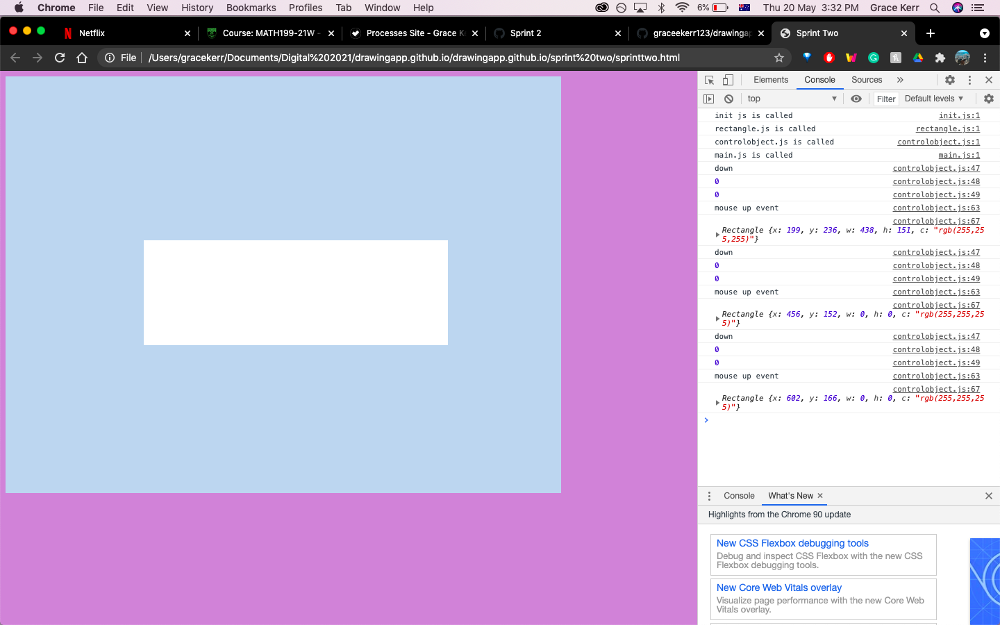
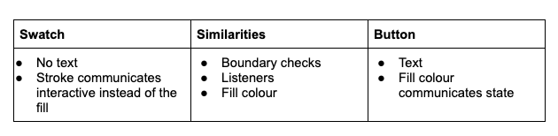
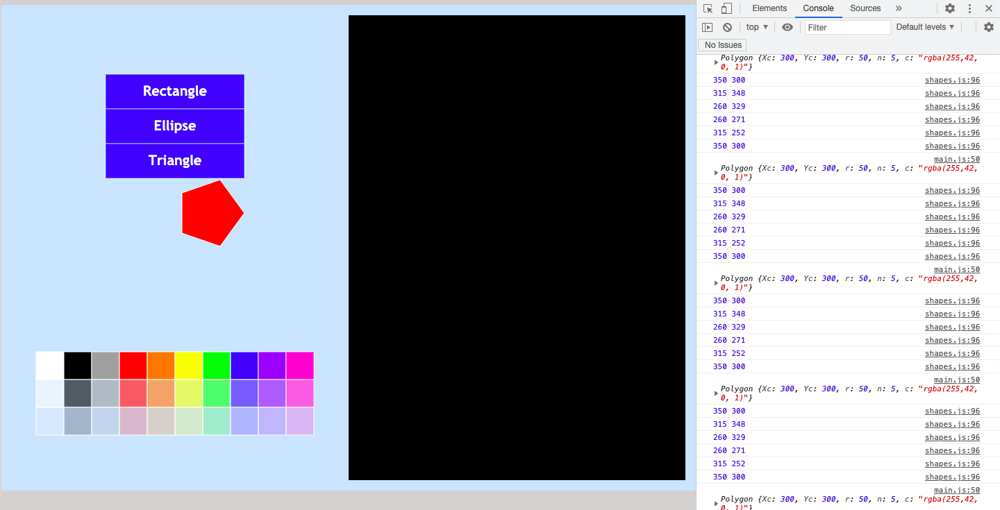
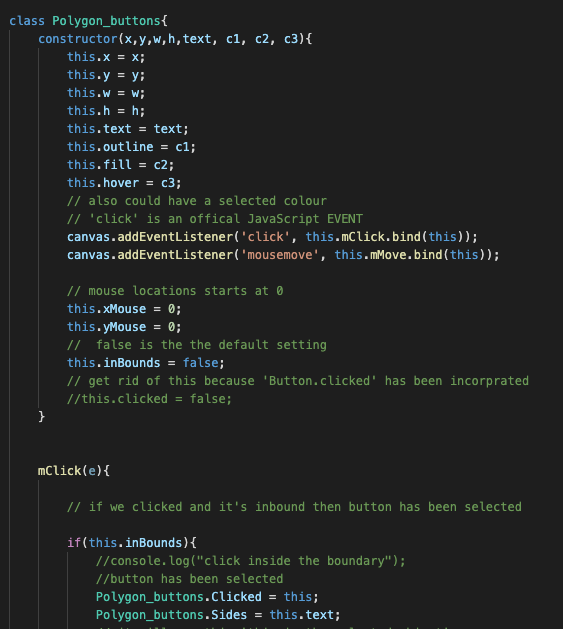
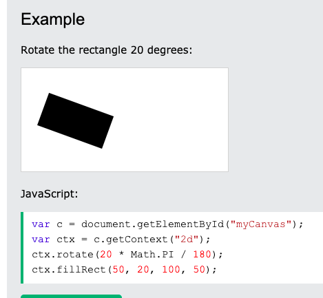

Brief
To make a web based drawing application which allows the user to draw shapes and lines and to manage colours. This project needs to have a canvas environment and could include having animated drawing elements. This would be designed for 7 and 8 students to help make geometric shapes and patterns exciting so they'll be more enthused for the Maths subject.
Sprint One
AIM
To allow the user to click with their mouse and then drag to draw a rectangle.
PLAN

KANBAN BOARD
TESTING
Test One:
I tested the colour array. I used 'console.log(colArray[1]);' and 'console.log(colArray[4]);' to test if the website returned the correct colour.

Test Two:
After I coded a Rectangle class in rectangle.js I tested it by instatiating a rectangle in main.js and calling it. This was a sucessful test. I was also able to check the colour, the 4th colour in the colArray.

Test Three:
I tested all the mouse listeners to make sure they work properly. As you can see, the consol log shows that they are.
Test Four:
I tested that the outline for the rectangle worked correctly. It was good that the rectangle outlined appeared, but I did find a problem with this test. This problem happens when the drag extends beyond the boundaries of the canvas, as beyond the boundaries the mouse isn't registered because there is no mouse listeners on this part of the screen. In the test, when the user tries to draw a rectangle outside of the canvas, the rectangle guide remains the same until the mouse returns to inside the boundaries again. the code doesn't realise this as mouse up and the program goes
REFLECTION
I think that this sprint went smoothly as I didn't encounter many problems while getting to the final base product which is sprint 1. Sprint one
is the simpliest application i could possibly make. Now we can improve through the subsequent sprints.
This was a very important sprint because I was able to get some major elements of my wed based drawing application working such as the canvas,
and secondly the ability to draw a rectangle guide and rectangle. Through testing it became apparant that the code that I have at the moment
for the canvas isn't suffient for a web application to go out into the real world. It's clear that in a later sprint that I will have to
fix the problem I found, that the rectangle guide is not updated when the mouse goes outside of the canvas. Although this problem should be fixed before
the project is finished, it isn't as high a priority as other basic functions this application is expected to have including buttons and
a colour selector. For this reason, I'll be adding this problem to my backlog. Next sprint, I think I'll focus on creating a drawing area inside
the canvas which will make my application look more structured and professional.
A plus on working on this next is that it will minimise the problem of the mouse not being registered outside of the canvas. This is because
having a separate box inside the whole canvas indicates to the user that they're expected to draw all the shapes inside the smaller box (the
drawing area) instead of the canvas. And due to the fact that mouse listeners are on the canvas as whole then if the user happens to go over the
drawing area outline the rectangle will still draw the shape (although I predict I will have to code a function to make sure the shape stays inbounds)
instead of not updating the rectangle shape like before. The not updating of the shape outline will still occur if the user tries to draw the shape from the drawing box to outside
to the canvas and outside again to the document body. However, sprint 2 makes it less likely that this problem will occur for a regularly abiding user.
Sprint Two
AIM
To create a drawing area inside the canvas, so that the user can only make shapes in the drawing area, instead of the whole canvas area. The area outside of the drawing area will be for buttons deciding shapes and colours - all things to be made in further sprints.
PLAN

KANBAN BOARD

TESTING
Test One:
This was a problem with registering the proper coordinates when mouse is down. After considering the issue and the tests i've done, I realised it was a problem with updating the w and h of the rectangle. This is likely due to the fact that the update function can't run at the same time as the down function which causes the w and h to not always be updated.
While testing this I console loged the widths and the height as well as 'console.log(temp)' to understand this more. It became clear that the displacement of the mouse's position from the original click and next tap (check this) became the width and height for the random rectangle that appeared when I tapped.
I have two possible solutions. This first was to run 'update()' inside the 'down' function.... This is bad because essentially 'down()' will run twice which is not very efficient.

My second solution is to reset w and h to 0 inside the 'down' function. This is good becuase it fixed the problem. It is a better solution that my first solution as it's more efficient as it makes sure that my program only needs to run once.
Test Two:
Test the boundraries. It works
Test Three:
I had this problem that the rectangle would still be created if I clicked inside the drawing area and draged out into the canvas.
Test that my click and drag guide and rectangle only works for inside the drawing area.
During this test, I found this problem when the mouse went outside of the canvas entirely and just on the webpage. The moust wouldn't be registered until it went back on the canvas.
REFLECTION
Sprint Three
AIM
To allow the user to change the drag and drop shape. I will make two buttons, one for the rectangle drag a drop (already coded) and the other for an ellipse drag and drop (to be coded), for the user to switch between. To have a viable product.
PLAN
I have a static variable with button selected, so that if it changes for one button it'll change for all of the buttons. There will be static variable called Button.Shape. Which will equal either rectangle or ellipse.
KANBAN BOARD

TESTING
Testing the Ellipse
I want to test the ellipse function and then test the drag and drop of the ellipse. This is important to do before trying to implement the button code because it will make fixing any problems a million times easier.
Test One:
Testing the button:
It is clear that the button was instatiated properly. I also check in inbounds
for the button and it is clear that it worked. Something to note is that the outline
of the button is not considered inBounds. I did this by using simple code (as shown below)
and I think to make it more efficient code, I will make sure to add buttons in a list, also
with another list with the button names in it. The loop will run through the list of the buttons
and the list of the button names. This will definetly be more efficient as
in the future sprints i'm expecting to have numerous buttons, and therefore, it make sense that
a better system of storing the button information is needed.
Iterative Decision
First Choice: to have a varaible defined in the constructure which can be true or false depending on whether or not
the button is selected.
Second Choice: to have a static variable - so only one button is the chosen button.
We can see the effectiveness of the first choice in test two.

Test Two:
Testing more than one button at the same time. And testing that the change of colours depending
if the mouse is hovering over the button is working. I'm using the idea of my first choice for this. I was sucessful in making two buttons appear on the page
and the hover over the buttons also works. As you ca see from my console log, the false and true is working properly.
However, there was a problem with the selection of the buttons as when I tried to select a button for the second time.
By this I mean that after already selecting a button and wanting to select the other button, the code wouldn't deselect the first button.
It was because of this that I decided that my first choice of the iteraive decison is inherted flawed, as it doesn't
deselect buttons when i'm selecting another one. I want to try the static variable. After incorprating the static variable
into my code, it seems like it is the better option as it makes sure that only one button is chosen at one point of time.
The static variable is at the very end after declaring the class. It is called 'Button.Clicked'. This is more practical
Test 3
I wanted to test that the drag and drop of the ellipse worked, however when I drew it, it was very much so enlarged
and didn't fit the screen.
I then came across another problem, and that is that my ellipse's that I was drawing weren't changing depending
on the movements of the mouse. I fixed this problem by fixing the variables for when I
instaitate the Ellipse inside the 'controlobject.js' just before it's pushed to the temp list.
Before the width and height was defined as 'w' and 'h', and to fix this I changed it to 'this.w' and 'this.h'.These are being updated from the mouse
move function. So the width and
height taken are the integers that are onces that are passed through controlobject.js rather than the w and h defined in main.js.
Another problem that I noticed during this test is that before selecting any buttons, it still draws the guide rectangle
and then doesn't draw any shape. I will put on the backlog to make sure that the guide will only draw after one of the buttons
is selected. This will make it less confusing for the user.
REFLECTION
Big thing is that the shapes can only be only colour. I need colour options. Why not a colour palette at the bottom
of the page - give a whole list of options. This seems like it's the biggest priority because it's important for the
user to have different colours to draw with to foster creativity.
I learnt the importance of static variables which will help me in future sprints.
Sprint Four
AIM
PLAN
KANBAN BOARD

TESTING
Test One:
Testing that two swatches work:
This was alright because Swatches are very similar to buttons. So I learnt from all my mistakes I made in sprint 3 while
creating two interactive buttons, and applied this while making swatches. A big part of this was reconigising the importantance
of static variables from very early on in the sprint. I learnt from the previous sprint that static variables are crucical
for interactive spaces/area (IS THAT THE RIGHT WORD?) on the canvas as if the button or swatch leads to a particiular action,
then we need a swatch to make sure that the action is always true for each interactive area that is clicked on. (DOES THIS MAKES SENSE?)
As you can see, I had no iterative decision as I knew from the get go that a static variable is the obvious way to go.
Test Two:
This will be testing that the two swatches work properly. Ahh perfect so good. But please do explain in detail what is occuring in this test
Iterative decision
Now that I know two swatches work, I need to make sure that all colours from my three tiered colour array (in init.js) are displayed on the screen and that all of these function properly.
Option 1
This is to instantiate all swatches in main.js. Due to my 3 x 10 colour pallette /colour array, this will essentially
30 lines of code to instatiate all the colours (with the varing transparancys) and then push all 30 of these to a list,
from which we can create all of these on the canvas with a loop. Although this may be time consuming, it's a very logical
way to attatck the problem of getting so many swatches onto the canvas.
As you can see from the photo below, I coded 6 swatches like this. It was very time consuming for only a small pay off.
Further adding to the fact that option 1 is flawed, is that I only coded 6 out of 30 swatched, which only emphaisises
how many lines of code.
Option 2
This option is to make a loop that would instatiate all of the swatches. This may be more difficult to code and may take
more time to develop this code. However if I do consider this the better and more effective option, then I think it's worth
spending a bit more time on it to make it good. The benefits outweight the extra time, espeically as colours is a major
component of this program. From the last two screenshots, it shows that I can easily change the size of the colour palette by easily
changing a couple of numbers - so easy!


Decision
In the end I decided that Option 2 is more practical as the code is more compact. This is better for the code as it helps the code repeating itself so many time. This also makes it more functional, so another coder could come and work on my drawing app and know exactly which part of code to look for to help fix the program if there's a problem. And if there is a problem, they would only need to fix code in one place rather than 30 lines - which is way easier.
Test Three: Testing full palette
While coding the full colour palette, using option 2 I ran into a few problems. The first is that nothing appeared in terms of the colour palette and I also lost control of the buttons. However while console logging my code, I could deduct that the instatiating of the swatches was working perfectly as 30 swatches were instaitated. From this I know that there is a problem updating the swatches so they print. The problem was with the update function. I fixed this by throurgh testing through the use of 'console.log's.

REFLECTION
At this point I've coded all the major parts of this program including a drawing area, a choice of shapes and
a choice of colours. I think that the next priority it to expand on the options that I already have, espeically
the drawing options. Having more shape options seems like a big priority to me as anyone who downloads a drawing app
would expect a reasonably variety of drawing options.
Viable project or something
As you can see from one of the testing videos that the drawing area gets filled up pretty fast,
I think that it would be helpful to make sure that the user has the option of an undo button which would
erase the shapes they drew. This would make the drawing app better as it would be more flexible as it
would let users to have the option to redraw their shapes and draw more than before. As you can see, I can think of
many other features to include
Sprint Five
AIM
To have options for more shapes and to include options for a range of polygons
Smallest of the two values. So if they draw like a long rectangle (long w, smaallist h) it would be h x h to make a sPLAN
KANBAN BOARD
TESTING
Test One: To see if my Triangle Class works
Originally I did run into some problems testing to see if the triangle class worked. However after testing my code with creating the triangle at different points (e.g the begining, middle or end) of the 'function animate()' inside 'main.js'. The problem I had was that the triangle was showing up behind other page elements so it looked like I messed up some code up inside the Triangle class. When I moved to code to create the triangle to the end of the 'function animate()', the triangle was visible as it is printed after all other page elements.
After consol logging I could see it wasn't a problem with the Triangle class as the triangle was instatiated properly as shown by the screenshot below. From doing this, I could look at other parts of the code to check - testing my programme in parts an efficient way to test.
Test Two: Test my triangle button
I encounted a problem which was that no matter which direction I dragged the mouse, from the mouse position of mouse down, it would create a triangle to the left, and down a bit. This problem is due to my x,y,w,h values inside the Triangle class not relating to where mouse is clicked or when mouse is released. The valeus for width and height were written as absoulte values, so the triangle won't be created in the designated position. To fix this I took away the absoulte value code. Now it works properly. As you'll see in a upcoming video.
Test Three: Testing a polygon class works
The Polygon class works. Now I was to test to get it into a button.
Test Three: Testing a polygon button works
The Polygon button works.
However, I found a problem. This problem was that the polygon wasn't drawn inside the bounding box. To fix this I had to make sure to make the radius half of h or w, depending whether the height or width is smallest. In my video, you see when I drag and drag a bounding box with a small width and a big height, it will make a polygon based on the large height - making a big polygon. The ideal polygon to be created is one within a square with a side length which is the width of the original bounding box. This ensures that the polygon created is fully inside the bounding box created by the user. To fully understand this idea, I have to understand that a polygon is made using a circle and the radius of this circle. To fix this problem I will have to put conditions on the radius value. This becomes a problem as the polygon might end up outside the drawing area, like shown in the image above. This happens as if the bounding box is drawn close to the edge of the drawing area and the radius value used to draw the polygon is big. When this occurs, the polygon can be created outside of the bounding box and therefore, there's a possibility that it could be drawn outside of the drawing area.
To fix this I had to make my code to account for this. So I made code (as shown below) that when the height (of the bounding box) is smaller than the width ( of the bounding box) it will draw a polygon with a radius half of the height (of the bounding box) which means that the diameter will length h. Since h is smaller that w, the polygon will fit into the bounding box well. Then if the width (of the bounding box) is smaller than height (of the bounding box) then the code will draw a polygon with radius hald of the width (of the bounding box) which means that the diameter will be a size of w. This means that the polygon will fit inside the bounding box dragged by the user. And if the bounding box doesn't fit either of these conditions, it will mean that the bounding box has an equal height and width. In this case, the radius will be half h, which is also equililent to half w. This will also have a accuractly sized polygon inside the bounding box.
After analysing this solution, I found that there too much repition within the code. because I have 3 conditions and then create a new polygon and then push it into the object list for each condition. It would be better to have a more functional code. I'm thinking that to do this I would have a condition on only one of the variables, this would be R (the radius) as this is the only value I was changing in the code. This worked better, as you can see below. I was having problems testing a condition on R in controlobject.js, so I decided to try a new approach and add this variable in my Polygon class. The code is shown below. For this new code, I had to define the variabe R inside class. Since R depends on the values of the width and height of the bounding box I had to pass this through the code. To do this I added h and w to the parameters to the class and the include these values in the constructor as well as put this.w and this.w inside the code instatiating the polygons inside control.object.js.
Iterative Decision
However as a polygon could mean so many shapes depending on the amount of sides the polygon has. For example, a six sideed polygon is a hexagon while a 10 sided polygon is a decagon. For this reason I think it makes the mst sense for the user that they choose the amount of sides the polygon would have. If I do this the user won't have to wonder what type of polygon they'll get when clicking on this button.
Option One:
This option is to code 3 different buttons each with a different n value which I will distinguish in the code when instatiating the button. To do this I had buttons like Pentagon, Hexagon and Heptagon and I have manually change the n value for each button. The outcome for this is acceptable, so this is a valid option.

Option Two:
For this solution I create a new button set that is solely for different polygon options. This option is more complex than option 1 as I need to create more button code, as there needs to be a different static variable. This is becasuse if these buttons with '4', '5' and '6' (ect) were in same button set as the other shape buttons, then if the user clicks on one of the number of sides options it will deselect the polygon being selected. This is due to the static object making sure only one button being selected at one time. Because these buttons operate a little differently I want there to be a little bit of a distinction from these buttons compared to the other buttons. To do this I would like to have a gap, however that's not possible with the code for the button placement in main.js. So I will have to improve this code as well for this option - however, this would be something I would've had to do later on anyway.
Testing the button selection works
I created a new class called 'Polygon_buttons' that will be used to create the buttons that have the side length options for the polygon. I had to create a new side length buttons for this. It makes sense that these side length buttons to be smaller. For the new 'Polygon_buttons' class I had to make 2 new static variables; 1 to make sure that only one of these side length buttons can be selected at one time, and the other to make sure that the number of sides could be passed through to other sections of code.
As you can see that my new 'Polygon_buttons' class works as these side buttons can be selected when the shape buttons are also selected - which is a crucial part of this option. As mentioned, this is due to their being a new class of buttons that is separate to the original shape buttons. I haven't connected the actual instaitation of different sized polygons to the buttons yet. But a problem that I do see is that the side length button is still selected when the user decides to draw another shape. Although this is alright in theory because the shape is still drawn normally, but it is a bit confusing and not ideal.
Testing the side length buttons works
I connected the 'Polygon_buttons.Sides' static variable to the instatiation of the polygon. As you can see when I click on the Polygon button and then a side length, it creates the correct polygon. If the user only clicks a side length and not the polygon button, no shape is created if the user tries; this is what we want as we don't know if the user actually wants a polygon. If the user draws a polygon and the goes to select another shape, the number of sides button will remain selected - but this is fine because it draws the new shape and not a polygon. Also, if the user goes back to drawing polygons it will automatically draw polygons with the number of sides.
Decsion:
I chose option 2 because it is a better solution in many ways. This way I can easily add another polygon button for a side length without adding too many lines of code.
This is because the number of sides relates to the number on the button, and this is connected to the 'n' side lengths. While option one depends on
each button being pushed to a list seperately, while in option 2 this can be done in a loop (more efficient and functional).
However, option two makes the buttons seem more asthetically pleasing on the page, as option 2 gives the option for the number of sides in smaller buttons. This is better than option 1, which
has seperate large buttons for each polygon options which contributes to the clutter of the page. Going into further sprints i can see this becoming a bigger problem,
so I should do what I can do now to minimise this.
REFLECTION
Sprint Six
AIM
To have a undo and clear all button.
PLAN

KANBAN BOARD

TESTING
Test One: Testing the selection of the buttons work
The selection of the buttons works well. As when either the undo or clear all button is clicked, the orginal shapes buttons will be deselected.
Test Two: Making sure the buttons work
As you can see, my clear all and undo buttons are not completely functional. If i have a bunch of shapes on the page, and if I click on undo it won't work; but if I click up and down again (inside the drawing area), it'll remove a shape. This is also the same for the clear all button - as the shapes will only be cleared after I click inside the drawing area after clicking the clear all button. From this test, I know that there's a delay because the programme is not recognising when the mouse goes up the first time.
After some more testing, I know that this is because the code for the clear and undo buttons and the code that recognises what 'Button.Clicked' is (inside button.js), are running at the same time. Along with the fact that the clear all/undo code is place in the 'mUp' function inside the 'controlobject.js' at the moment. For example, for the undo button, the 'Button.Clicked = "undo"' is reconised at the same time as the 'if Button.Clicked = "undo"' code. Due to this, the result of the 'Button.Clicked = "undo"' is never carried out asnthe undo/clear all button isn't being processed until the 'mUp' function is called again and this occurs when the user clicks again. To fix this I will put the code for the clear all and undo inside the update function, so it is running all the time.
As you can see I fixed this problem, and now it works. So it will always undo the last drawn shape when clicking the undo button. Also the programme will always clear all the shapes on the screen if I click the clear all button.
I had to make sure to have 'Button.Shape = "";' at the end of each command for clearing or undoing. This is because if these buttons are not deselected then the code will keep undoing until there is no shapes on the drawing board. And this is something that the user did not ask for.
br>Sprint Seven
AIM
To allow the user to be able to draw a line.
PLAN

KANBAN BOARD

TESTING
Test One: Testting the line function works.
It works.
Test Two: Testing the button works properly.
There is a problem. This is because I set the end coordinates of the line to be the width and height of the bounding box. When I did this, it took the values of the width and height of the bounding box and adjusted them according to the 0,0 (the top left corner) of the page. To fix this I need to set the end coordinates of the line to the position of the x and y mouse. This is because this will be the edge of the bounding box.
The line now works. But it seems like when the line has a thick width (for example, 10) the line could be created pass the boundary of the drawing area. This means that my solution of making the bounding box not being able to go outside of the drawing area doesn't fix issue.
Test Two:
I'm also interested to take away the bounding box for the line as there's no reason to have it as it's drawing a line not a shape. This is because the user can use where their cursor is to figure out where the line is going to end up. This also makes my programme cleaner. I did this by adding a condition on the drawing 'drawRectGuide' inside the draw function inside 'controlobject.js'. This condition was the static variable 'Button.Shape' had to equal the shapes, the shapes where I wanted the retangle guide like Polygon and rectangle ect.
REFLECTION
This is a picture that a user could create. However, there is a lack of curved lines. This is why I want to work on a brush button, so the user could've created a better mouth and eyes as they would have access to curved/wiggly lines.
Sprint Eight
AIM
To create a brush button, with different lengths
PLAN
KANBAN BOARD
TESTING
Test One: Testing what brush will draw for a single moment of time
Test Two: Test the button connects
I can see that the repeated circles that make up the brush work well. For the button to work I had to make sure to put the code to
instatiate the brush class was in the 'mMove' function as the circles need to called when the mouse moves not just when the move is clicked
and draged. The brush works well and the different colours work as well.
The problem I found that I wasn't able to limit the brush to keep inside the drawing area.
I decided to see if this was a problem for any of the other shapes. You can see that the other shapes kept inside the
drawing area. From this I can conclude that this is a problem with only the brush. Looking at what is different from the brush compared
to the other shapes, it's the fact that the brush is placed in the 'mMove' function and not 'mUp'. So I know I have to fix something involving
'mMove'.
The problem arised due to the fact that the inBoundsCheck, that runs when mouse is pressed down, is using the exact coordinates where
the mouse was clicked down. This is because I set the coordinates (this.xMouseStart, this.yMouseStart) and returned true or false depending
whether or not they are inside the drawing area. This works for the other shapes because for the shape to be created they have to click inside
the drawing area, secondly, I have code that makes sure that the values (this.w and this.h) used to create the shapes will never be larger than the boundaries. So this
solution only works the shapes and not the brush is because I don't use this.w and this.h to create the brush.
To fix this I put more conditions that have to occur before the brush is instaitated. As well as making sure the Brush button had to be selected
and the mouse was down, the inBoundsCheck has to return true for the current positions of the mouse (x and y coordinates). This way, the brush (the small circles)
will stop creating when the mouse goes out of the drawing area or if they lift their mouse. You can see the brush finally working properly.
I also tested the undo and clear all buttons here. The clear all works perfectly. But it clearly shows a limitation of the brush, which is that it can not be easily undo'd. This is because each circle created within the brush class is an object, therefore, only one circle (of the line drawn by the brush) is removed at one time. However, as seen by the test it doesn't take too long to remove a long brush line if a user needs to. Although redesigning this part of my project would be a huge task and isn't a priority right now. Comparing the pros and cons of having a brush feature, I can conclude that giving the user's the opportunity to use this brush is more important that this small flaw. My program is still very usable and it may just take a little bit more time for a user if they make a mistake.
Test 4: Looking at the line
After completing a lot of testing for the brush, I noticed that it is quite a bit confusing if there is no bounding box for the line. However, I still didn't like the look of the line with a bounding box. Because I this I seeked to find another solution. I decided that it would be better if the user could see the line that would be drawn before the line is instatiated and an element of the page.
I added this code. Which means that if the user selects Line, the code will create line that will represent the line that will be instatiated when the user's click goes up.
Iterative Decision
I want to make sure that the user has options of different sized widths for the brush. It is apparant there there is more than 1 way of doing this.
Option 1
Option 1 is to have a range of circle buttons that will determine the width of the brush. These circle buttons will need a new class and a new static variable that makes sure that only 1 brush option button can be selected at the same time, independent of the shape buttons. I think that having visual representations of how big the brush size will be good. Therefore these brush option buttons will be in a circle shape. I will definetely need to make a new class for these circle buttons, as the code will be very different compared to square buttons
Plan of the circle button:
Code:
As you can see all the buttons work well, and if the user only pushes the Brush button they'll draw with a brush that is all the same
width as 'M'. And then the brush width selected will stay selected even if the user selects on another shape. This is what I want,
as it makes it easier if the user wanted to use the large brush width all the time instead of the default medium brush width.
Although this is the same kind of idea as the polygon option (number of sides) buttons, it is different. A static varaible carries the text of the button.
Therefore for the polygon option buttons, i was able to put this static varaible straight into the instatiation code as a variable. However, for brush length this was
not possible as the text of the button is either S, M or L. And these sizes then correlate to the brush width. Because of this I had to adapt my code
to fit this.
Option 2
Option 2 is to have 5 square buttons that will determine the size of the brush. I will add 5 more options in controlobject.js, and for each I will change the radius of the circle. This is a more straightforward version and I will be able to carry this plan out quickly as I can connect the new buttons with the already made button class in buttons.js.
As you can see all the buttons work well, and if the user only pushes the Brush button they'll draw with a brush that is all the same width as 'M'. However, the user would've had to test all the buttons first to see how big the brushes actually are, which is a big pain especially if the user is in the middle of a big drawing project.
Decision
I think option 1 is the better option because it is more functional as it would be super easy to add more buttons on that allow the user
to have different bursh widths. Secondly, it is better visually as the user will be able to see how big the brush is without having to go on a test
run first.
Test 3: Testing the brush
I found that my brush goes over the edge of the drawing area.
To fix this I made sure to clip whatever that is not inside the drawing area. To do this I added 'ctx.save()', 'ctx.clip()' and 'ctx.restore()' to the update function in control.object.js. I also think that this will help with the line, as it also had a variation of this problem where a small section of the line would be seen to go
Test 4:
I couldn't find anything wrong with this version. I think that I could add a new button which gave the user a chance to do something new. For this reason,next sprint I will work on a rotatng shape.
Sprint Nine
AIM
To create a diamond button
PLAN
A diamond is just a rotated square, so I know that i'll have research about how to rotated shapes. I looked at w3schools as shown below to gather a general idea about how to draw a rotated object.
KANBAN BOARD
TESTING
Test One: Testing that the diamond class works
I tried to instantiate a single diamond. Something went completely wrong and the whole page got rotated. This is because inside the Diamond class code I never saved and restored it. So all the page element got permantently rotated instead of just the rotation for the creation of the diamond.
To fix this I added 'ctx.save()'' to the begining of the draw function inside the Diamond class, and the 'ctx.restore()' to the end of the draw function inside the Diamond class. This makes sure that the orginal orientation of the page is saved so it then can be restored to this original orientation once the diamond is created.
Test Two: Testing the Diamond button works
The diamond works well. However, there is not bounding box which is something I think would add value to my drawing page program. I also noticed that the save, clip and restore commands I added to the upadte function inside the controlobject.js last sprint is useful here as well. This is because it clips off the end of any shapes that go outside of the drawing area.
The bounding box was added sucessfully, as shown below. However, I can see that the diamond now doesn't fit inside of the bounding box properly.
Solution to making sure the diamond is created inside the bounding box
I tried to fix it using a point to point drawing way to draw the diamond. It didn't work
REFLECTION
Sprint Ten
AIM
To create a rotating ellipse button
PLAN
KANBAN BOARD
TESTING
Test One:Testing the rotating ellipse itself
What I supsect happened here was that ellipse kept getting bigger and bigger. This is because I increased the counter for 'xR' and 'yR'. To fix this I made sure that the counter was only impacting the angle used to create the ellipse.
I changed this and it worked.
Test Two:Testing the button for the rotating ellipse works
It works perfectly. Also, if the rotating ellipse goes over the boundary of the drawing area, the save, clip and restore also works here to clip the shape so it's inside the drawing area. Fortunately, the rotating ellipse works with the undo button. However, I would like to make sure that there's a bounding box for what the original position of the the ellipse would look like.
With bounding box
Test Two:
REFLECTION
Sprint Four
AIM
PLAN

KANBAN BOARD

TESTING
Test One:
Test Two:
REFLECTION
REFLECTION
Test Two:
I found a problem after I clicked and draged a rectangle it would continue to draw the rectangle guide, and keep the MouseStart point. You can also see that my tap of the mouse is registered to create the rectangle guide, but it doesn't create a filled in rectangle.
How to fix the current mouse listener problem The problem is that the mouse up event is not recognise if the user goes beyound the boundary of the canvas. This is a problem because the mouse listeners are only attached the the canvas. Options 1) Allow the user to carry on (?) Option 2) When they draw out, the box goes up the boundary Option 3) Create a clipping mask so everything that gets drawn after the canvas gets cut off
Other
PROJECT BACKLOG
Make creating buttons more efficient.